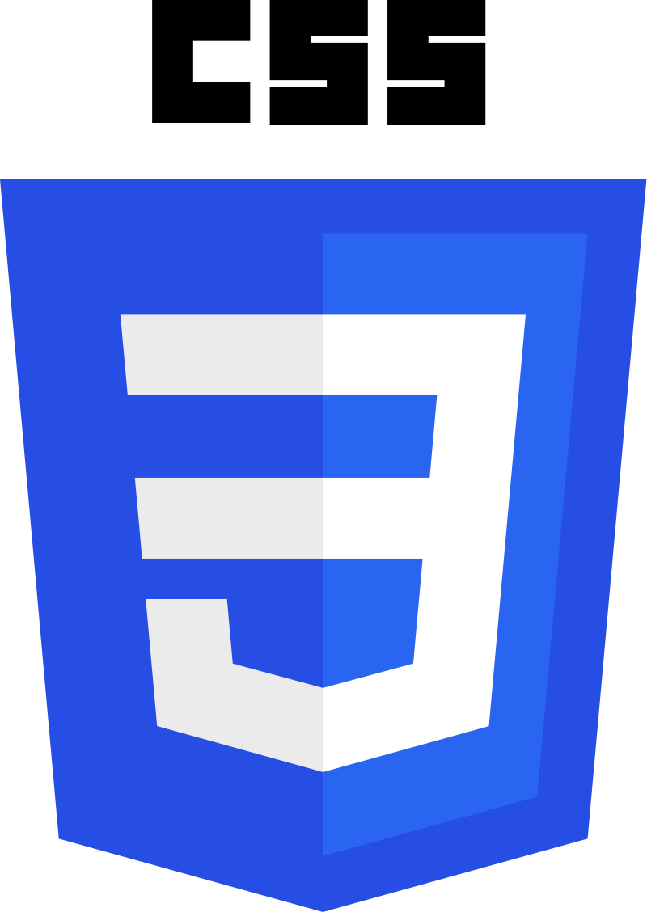
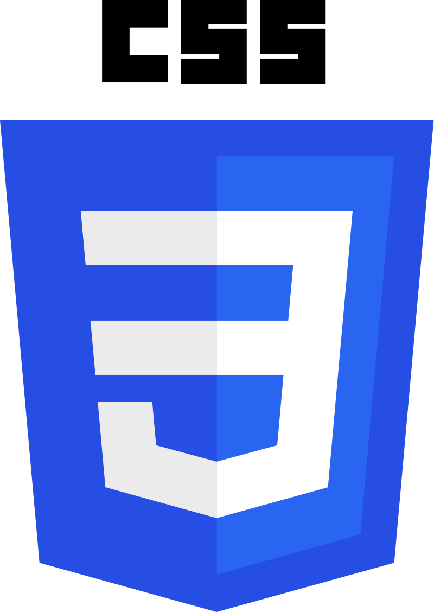

Mes passions
Pour accéder à la page de ma passion, veuillez cliquer sur l'image !
Présentation
Je m'appelle Hugo, j'ai 18 ans et je suis né en Alsace, en France. Je suis actuellement étudiant en 1ère année de Réseau et Télécommunication à l'IUT de Colmar.
Je suis venu dans cette formation car l'informatique est une de mes passions depuis longtemps ! J'aimerais plus tard travailler dans la cybercriminalité ou dans la cybersécurité.
Je suis quelqu'un de :
● Persévérant face aux problèmes que je rencontre
● Appliqué dans le travail qu'on me donne
● Ponctuel autant sur les horaires que le travail
Mais je peux être :
● Impatient
● Têtu
● Parfois trop ambitieux
Mes passions externes à l'informatique sont les échecs, la géographie (et tout ce qui est lié de près ou de loin à celle-ci comme la géopolitique, la politique, l'histoire...) et les trains !
Mon parcours
J'ai débuté l'informatique en 1ère et Terminale STI2D (Science Technologique de l'Industrie et du Développement Durable) option Sience de l'Information et du Numérique au Lycée Théodore Deck à Guebwiller (Alsace, France).
J'ai pu découvrir les métiers de l'informatique (surtout dans l'industrie) et ses avantages, notamment en terme de salaire et j'ai assisté à de nombreuses portes ouvertes et des visioconférences pour trouver la formation la mieux adaptée à ce que je voulais !
Mes compétences
Durant mes années de lycée, j'ai pu faire mes débuts sur le langage C++ (Arduino), le langage HTML ou encore le langage Python mais dans un cadre moins informatique, j'ai pu aussi découvrir la gestion de projets l'autonomie et la prise d'initiative.
J'ai été Jeune Sapeur-Pompier pendant 3 ans dans le Centre de Secours Renforcé d'Ensisheim, rattaché au SDIS 68. Cette expérience m'a permit de découvrir un monde ou l'assiduité, le travail d'équipe ou encore la force (mentale comme physique) sont promordiales même dans la vie de tous les jours.
Je m'étais essayé au javascript plus jeune, mais cette langue étant assez compliqué, je n'ai pas continué à l'étudier par manque de temps et d'expérience.
Cette année j'ai acquéri pas mal de bases en python et je suis plus à l'aise avec ce langage !
Se rendre invisible sur Internet
Étant donné que je suis né avec l'internet et l'informatique, j'ai été sensibilisé assez tôt sur l'anonymat sur internet et l'importance de cacher ses informations.
Je fais très attention à mes informations sur le world wide web et je surveille régulièrement ce qui peut être dit sur moi, afin notamment de soigner ma e-réputation.

 
